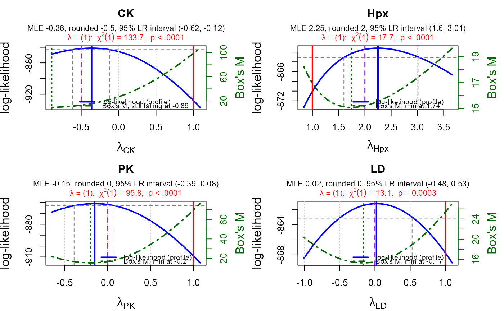
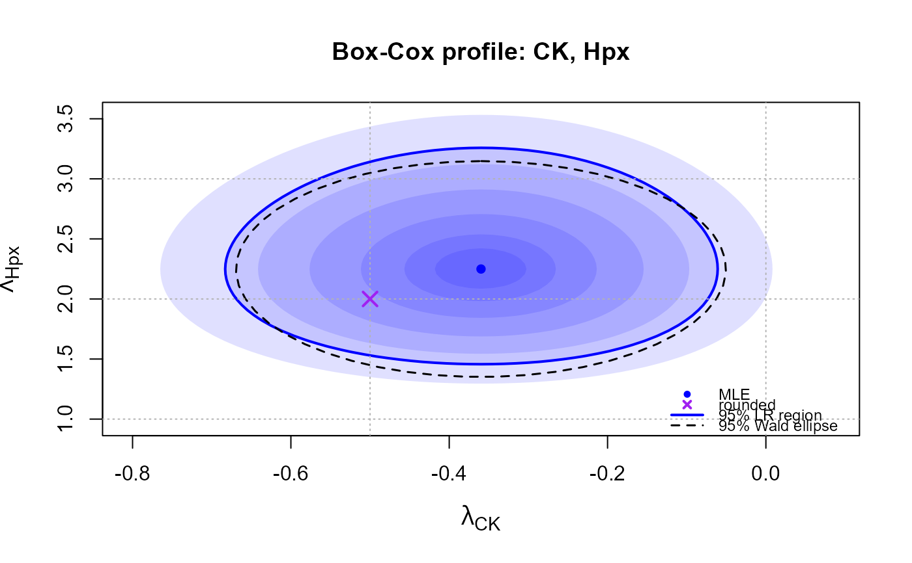
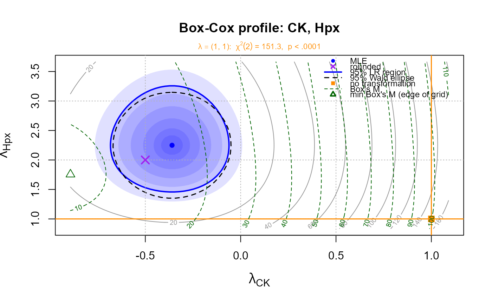
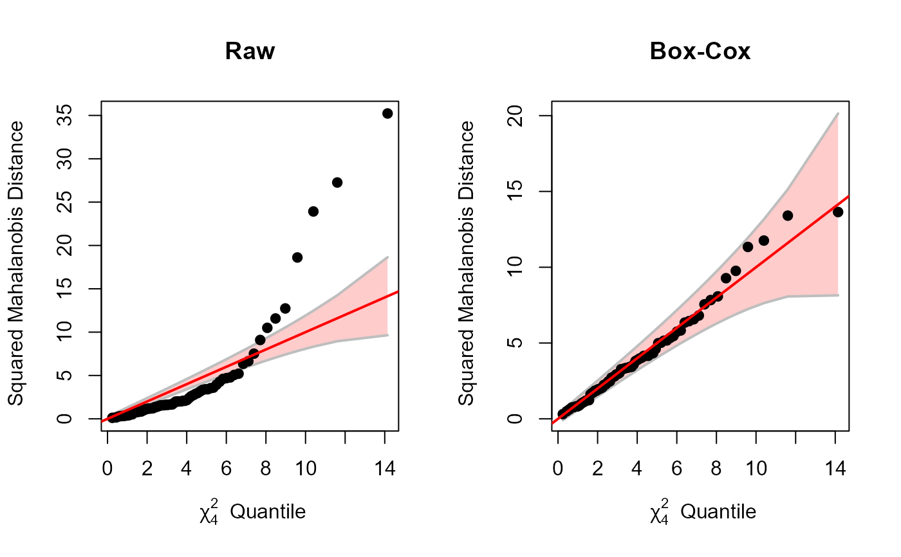

car::powerTransform() estimates Box-Cox powers \(\lambda = (\lambda_1, \dots,
\lambda_p)\) that make the residuals of a
multivariate linear model as close to multivariate normal as possible. These
functions add the graphics and the workflow around it:
bcProfile()computes the profile log-likelihood for one or two of the \(\lambda\)s on a grid, and itsplot()method draws it: a curve for one variable, nested likelihood regions with the Wald confidence ellipse for two. Optionally, Box's M statistic for the homogeneity of the group covariance matrices (boxM()) is computed at the same points, so the plot shows whether the powers that make the residuals most normal also make the covariance matrices most alike.bcRefit()refits the model with Box-Cox transformed responses, so it can be compared with the original usingcar::Anova(),heplot(),cqplot(),boxM()and so on.bcBoxM()finds the powers for which the covariance matrices of the transformed responses are most alike across groups, by minimizing Box's M. For a MANOVA, homogeneity of the covariance matrices is often a more important assumption than normality.
This development is a new contribution to diagnostic methods for multivariate
models. It stemmed from reading Rencher & Christensen's (2012, Section 4.5)
description of the problem, and the recognition that car::powerTransform()
had already done the heavy lifting of estimation and testing.
Usage
bcProfile(object, ...)
# S3 method for class 'mlm'
bcProfile(object, ...)
# S3 method for class 'powerTransform'
bcProfile(
object,
variables = 1,
type = c("profile", "slice"),
range = 3.5,
extend_range = FALSE,
ref = 1,
n = if (length(variables) == 1) 101 else 61,
group = NULL,
...
)
# S3 method for class 'bcProfile'
plot(
x,
level = 0.95,
nice = c(-1, -0.5, 0, 0.5, 1, 2, 3),
fill.levels = c(0.99, 0.95, 0.9, 0.75, 0.5, 0.25, 0.1),
col = "blue",
alpha = 0.12,
wald = TRUE,
ref.col = NULL,
round.col = "purple",
wald.col = "black",
M.col = "darkgreen",
cex.lab = 1.3,
xlab,
ylab,
main,
...
)
# S3 method for class 'bcProfile'
print(x, ...)
bcRefit(mod, lambda)
bcBoxM(Y, group, start = rep(1, ncol(Y)))Arguments
- object
A
"powerTransform"object fromcar::powerTransform()withfamily = "bcPower", or an"mlm"object, for whichcar::powerTransform(object)is called first- ...
Arguments passed to the
"powerTransform"method (for the"mlm"method), or tobase::plot()- variables
One or two responses, by name or number. One gives a 1-D profile, two a 2-D profile
- type
"profile"(default) maximizes over the other powers at each grid point;"slice"holds them at their estimates- range
Half-width of the grid around each estimate, in Wald standard errors
- extend_range
If
TRUE, widen the grid so it also includesref, to show how far "no transformation" is from the estimate- ref
Reference powers, recycled to
length(variables). The default, 1, is no transformation. Its likelihood ratio test is computed, and it is drawn when it is inside the grid- n
Number of grid points in each dimension. The default is 101 for a 1-D profile and 61 for a 2-D profile. A 2-D profile needs one optimization per grid point, so it can take several seconds
- group
A factor giving the groups. For
bcProfile()it is optional: if given, Box's M statistic for the transformed responses bygroupis also computed at each grid point- x
A
"bcProfile"object- level
Confidence level for the likelihood ratio interval or region, and the Wald ellipse
- nice
"Nice" powers, drawn as reference lines
- fill.levels
In 2-D, coverage levels of the nested likelihood ratio regions. Each is filled with a light
col, so the fill builds up toward the maximum- col
Colour for the log-likelihood curve or regions, and the estimate
- alpha
Transparency of each filled region
- wald
If
TRUE, draw the Wald confidence ellipse in a 2-D plot- ref.col
Colour for the reference powers. The default,
NULL, uses"red"in a 1-D plot and"darkorange"in the busier 2-D plot- round.col
Colour for the rounded powers
- wald.col
Colour for the Wald ellipse
- M.col
Colour for Box's M: in 1-D, a second curve with its own axis on the right (leave room with
par(mar = c(., ., ., 4))); in 2-D, dashed contours. Its minimum on the grid is marked- cex.lab
Size of the axis labels
- xlab, ylab, main
Axis labels and title. The axis labels default to \(\lambda\) with the variable name as subscript
- mod
An
"mlm"object fitted with adataargument- lambda
A vector of powers, one per response, or a
"powerTransform"object, whose rounded powers (coef(lambda, round = TRUE)) are used- Y
A matrix or data frame of positive responses, or an
"mlm", whose responses are used- start
Starting powers; default, all 1
Value
bcProfile() returns an object of class "bcProfile", a list with components
axes: the grid values for each variablegrid: a data frame of all grid pointsloglik,deviance: the log-likelihood at each grid point, and \(2(\ell_{max} - \ell)\)full_lambda: the full vector of powers at which each log-likelihood was attainedM: Box's M at each grid point, orNULLvariables,type,lambda(estimates),roundlam(rounded powers)ref: a list with the reference powers, their deviance and p-valuevcov: the Wald covariance matrix for these powers: marginal (invHess) for a profile, conditional for a slice
The plot() method invisibly returns a list with the likelihood ratio
interval (1-D) and M_min, the grid point where Box's M is smallest.
bcRefit() returns the refitted "mlm", with the powers in attribute
"lambda".
bcBoxM() returns a list with components lambda (the powers that minimize
M), M (the minimum), M_start (M at start), convergence (from
stats::optim()), and M_of, a function giving M for any vector of powers.
Details
The log-likelihood. For multivariate normality (Andrews, Gnanadesikan &
Warner, 1971) it is
$$\ell(\lambda) = -\frac{n}{2} \log |\hat\Sigma_\lambda| +
\sum_j (\lambda_j - 1) \sum_i \log y_{ij}$$
where \(\hat\Sigma_\lambda\) is the ML covariance matrix of the
residuals of the model fitted to the transformed responses. Its maximum is the
estimate from car::powerTransform(), and differences in it reproduce the
likelihood ratio tests of car::testTransform().
Profile or slice. With type = "profile", at each grid point the
log-likelihood is maximized over the other \(\lambda\)s, giving a
true profile, so that \(2(\ell_{max} - \ell)\) can be referred
to a \(\chi^2\) distribution with 1 or 2 df for a confidence
interval or region. With type = "slice", the other \(\lambda\)s are
held at their estimates. This is much faster, and close to the profile when the
estimates are nearly uncorrelated (see cov2cor(object$invHess)), but it is
not a proper profile, and can mislead when they are correlated.
Box's M. It is invariant to rescaling each variable, so no Jacobian term
is needed when it is computed for transformed responses. In bcProfile() it is
computed at the same full \(\lambda\) vector as the log-likelihood at
each grid point. bcBoxM() minimizes it with stats::optim() (Nelder-Mead).
Use that with care: when M changes little with one of the powers, the optimizer
can wander to extreme values of it. Plotting M against each power, with
bcProfile(..., group = ), shows where this happens. This is a multivariate
analogue of choosing a transformation from a spread-level plot
(car::spreadLevelPlot()).
Refitting. bcRefit() keeps the Box-Cox scaling
\((y^\lambda - 1)/\lambda\) (car::bcPower()), so
the direction of an effect is preserved when \(\lambda < 0\). The
transformed responses get syntactic names: a power of 1 keeps the name, 0 gives
logCK, and others CK_m0.5 (for -0.5) or Hpx_2. The model is refitted with
stats::update() using the data frame named in the original call, with these
new columns added, so the call must have a data argument.
Positive responses only. Only the "bcPower" family is supported, so the
responses must be positive. For responses with zeros or negative values,
car::powerTransform() can estimate powers with other families, though these
functions do not yet handle them:
family = "bcnPower": the Box-Cox transformation with negatives (Hawkins & Weisberg, 2017), which estimates a location shift along with the power (car::bcnPower());family = "yjPower": the Yeo-Johnson (2000) transformation, defined for all real values (car::yjPower());or add a start (shift) to each response before using
"bcPower".
References
Andrews, D. F., Gnanadesikan, R., & Warner, J. L. (1971). Transformations of multivariate data. Biometrics, 27, 825–840.
Box, G. E. P., & Cox, D. R. (1964). An analysis of transformations. Journal of the Royal Statistical Society, Series B, 26, 211–252.
Hawkins, D., & Weisberg, S. (2017). Combining the Box-Cox power and generalized log transformations to accommodate nonpositive responses in linear and mixed-effects linear models. South African Statistical Journal, 51, 317–328.
Rencher, A. C., & Christensen, W. F. (2012). Methods of Multivariate Analysis, 3rd ed. Hoboken, NJ: Wiley. Section 4.5.
Yeo, I.-K., & Johnson, R. A. (2000). A new family of power transformations to improve normality or symmetry. Biometrika, 87, 954–959.
See also
Estimation and tests: car::powerTransform(), car::testTransform();
the transformation itself: car::bcPower().
Univariate versions: car::boxCox(), MASS::boxcox() (profile likelihood for
one response); car::symbox(); car::spreadLevelPlot() (choosing a power to
stabilize spread).
Checking the assumptions before and after: cqplot() (multivariate normality
of residuals), boxM(), plot.boxM(), covEllipses() (homogeneity of
covariance matrices), bartlettTests(), leveneTests() (univariate
homogeneity of variance).
An alternative for heavy tails and outliers, rather than skewness:
robmlm().
Seeing the effects in the refitted model: heplot(), pairs.mlm().
Examples
data(Dystrophy)
dmd.mod <- lm(cbind(CK, Hpx, PK, LD) ~ group + age + month, data = Dystrophy)
dmd.pt <- car::powerTransform(dmd.mod)
summary(dmd.pt)
#> bcPower Transformations to Multinormality
#> Est Power Rounded Pwr Wald Lwr Bnd Wald Upr Bnd
#> CK -0.3598 -0.5 -0.6077 -0.1120
#> Hpx 2.2493 2.0 1.5300 2.9687
#> PK -0.1500 0.0 -0.3858 0.0859
#> LD 0.0211 0.0 -0.5022 0.5444
#>
#> Likelihood ratio test that transformation parameters are equal to 0
#> (all log transformations)
#> LRT df pval
#> LR test, lambda = (0 0 0 0) 96.16528 4 < 2.22e-16
#>
#> Likelihood ratio test that no transformations are needed
#> LRT df pval
#> LR test, lambda = (1 1 1 1) 219.1944 4 < 2.22e-16
# 1-D profiles, extended to show lambda = 1, with Box's M on the right axis
op <- par(mfrow = c(2, 2), mar = c(4, 4, 4, 4))
for (v in c("CK", "Hpx", "PK", "LD")) {
prof <- bcProfile(dmd.pt, v, extend_range = TRUE, group = Dystrophy$group)
plot(prof, main = v)
}

par(op)
prof
#> Box-Cox profile log-likelihood for LD (101 grid)
#> MLE: 0.021
#> Rounded: 0
#> 95% LR interval: -0.483, 0.527
#> LR test of lambda = (1): chi-square(1) = 13.11, p = 0.0003
#> Box's M: min 15.29 at (-0.167) on the grid
# \donttest{
# 2-D profile for a pair: likelihood regions and the Wald ellipse
prof2 <- bcProfile(dmd.pt, c("CK", "Hpx"))
plot(prof2)

# extended to (1, 1), with contours of Box's M
prof2x <- bcProfile(dmd.pt, c("CK", "Hpx"), extend_range = TRUE, n = 81,
group = Dystrophy$group)
plot(prof2x)

# }
# Refit with the rounded powers (-0.5, 2, 0, 0)
dmd.bc <- bcRefit(dmd.mod, dmd.pt)
colnames(coef(dmd.bc))
#> [1] "CK_m0.5" "Hpx_2" "logPK" "logLD"
# residuals before and after
op <- par(mfrow = c(1, 2))
cqplot(dmd.mod, main = "Raw")
cqplot(dmd.bc, main = "Box-Cox")

par(op)
# the transformation also makes the covariance matrices more alike
boxM(model.response(model.frame(dmd.mod)), Dystrophy$group)
#>
#> Box's M-test for Homogeneity of Covariance Matrices
#>
#> data: model.response(model.frame(dmd.mod)) by Dystrophy$group
#> Chi-Sq (approx.) = 134.4806, df = 10, p-value = < 2.2e-16
#>
boxM(model.response(model.frame(dmd.bc)), Dystrophy$group)
#>
#> Box's M-test for Homogeneity of Covariance Matrices
#>
#> data: model.response(model.frame(dmd.bc)) by Dystrophy$group
#> Chi-Sq (approx.) = 13.6105, df = 10, p-value = 0.1915
#>
# Powers that minimize Box's M, vs those for multivariate normality
data(Diabetes)
Y <- Diabetes[, c("glufast", "glutest", "instest", "sspg")]
bm <- bcBoxM(Y, Diabetes$group)
round(bm$lambda, 2)
#> glufast glutest instest sspg
#> -1.02 -0.64 0.32 0.61
c(M_untransformed = bm$M_start, M_min = bm$M)
#> M_untransformed M_min
#> 382.8363 122.4084
round(car::powerTransform(lm(as.matrix(Y) ~ group, data = Diabetes))$lambda, 2)
#> glufast glutest instest sspg
#> -0.78 -0.36 0.20 0.58